DAY06 – Interlaken → Luzern a Grimsel és Furka hágón át
A mérés automatikusan indul oldalnyitáskor, majd 5 mp múlva frissít.
A távolságok minden célpontnál frissülnek.
1. Interlaken (Start)
mérés: várakozás
távolság: —
Interlaken neve szó szerint „a tavak között”, mert a Thuni- és a Brienzi-tó közé ékelődve fekszik.
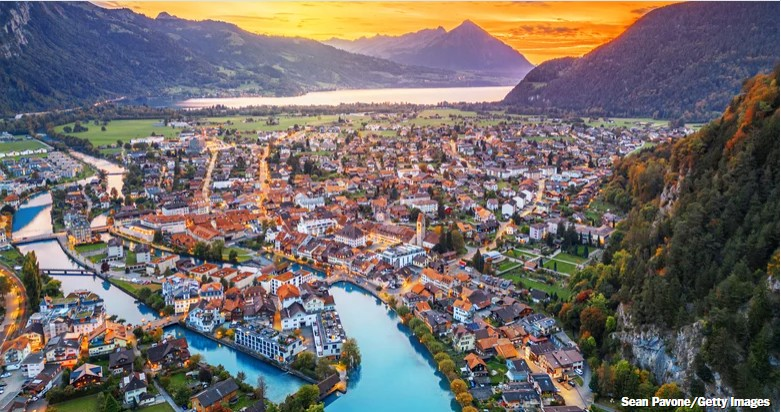
2. Staubbachfall
mérés: várakozás
távolság: —
A Staubbachfall a Lauterbrunnen-völgy jelképe és az egyik legmagasabb szabadon eső vízesés a térségben.
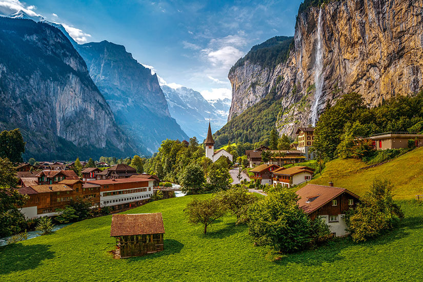
3. Brienzersee (Brienzi tó)
mérés: várakozás
távolság: —
A Brienzi-tó mély, gleccser vájta alpesi tó, jellegzetesen türkiz vízszínnel.
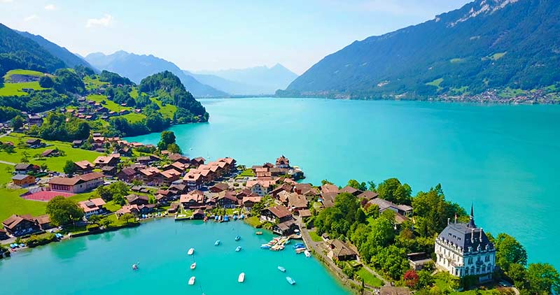
4. Sherlock Holmes Museum, Meiringen
mérés: várakozás
távolság: —
Meiringen neve összeforrt a Reichenbach-vízesésnél játszódó Holmes–Moriarty történettel.
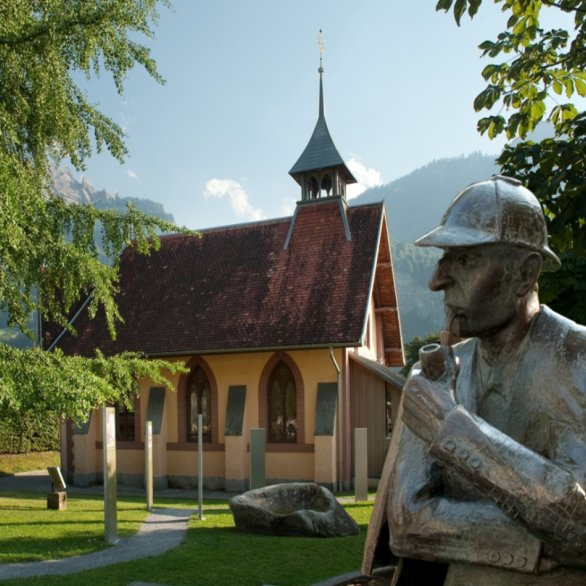
5. Grimsel hágó, 2164 méter
mérés: várakozás
távolság: —
A Grimsel-hágó fontos vízválasztó a Rajna és a Rhône vízgyűjtői között.
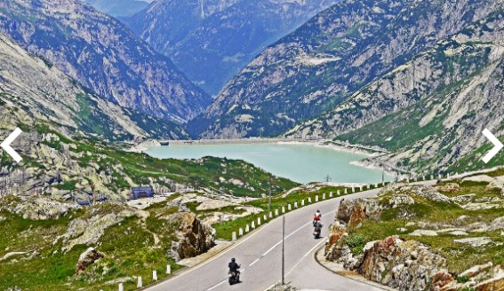
6. Furka hágó, 2429 méter
mérés: várakozás
távolság: —
A Furka-hágó Svájc egyik legmagasabban vezetett közúti hágója Valais és Uri között.
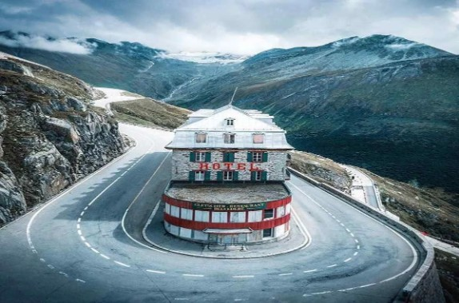
7. Teufelsbrücke (Ördög hídja) – Schöllenen-szoros
mérés: várakozás
távolság: —
A Schöllenen-szoros a Gotthard út történelmi „szűk keresztmetszete”, itt épült az Ördög hídja a Reuss fölött.
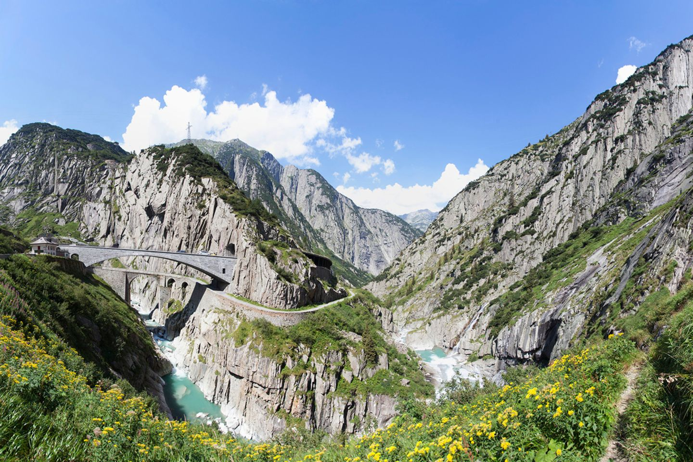
8. Wassen – St. Gallus templom
mérés: várakozás
távolság: —
Wassen temploma a Gotthard vasút spirális alagútjai miatt vált ikonikus látvánnyá.
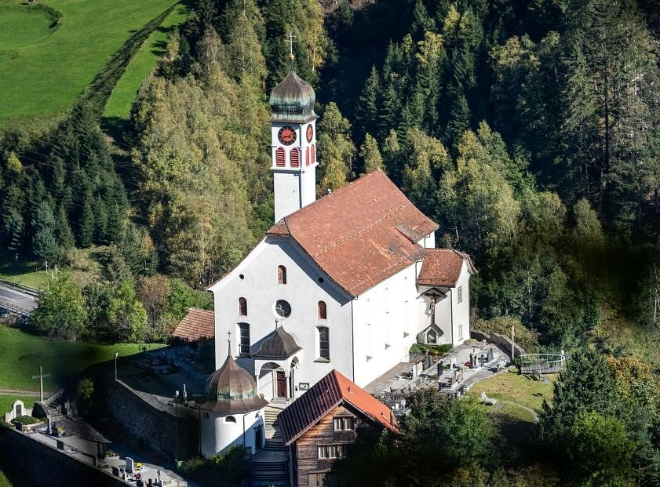
9. Vierwaldstättersee (Lucerni tó)
mérés: várakozás
távolság: —
A Lucerni-tó neve a „négy erdős kantonra” utal, a tó rendkívül tagolt, fjordszerű öblökkel.
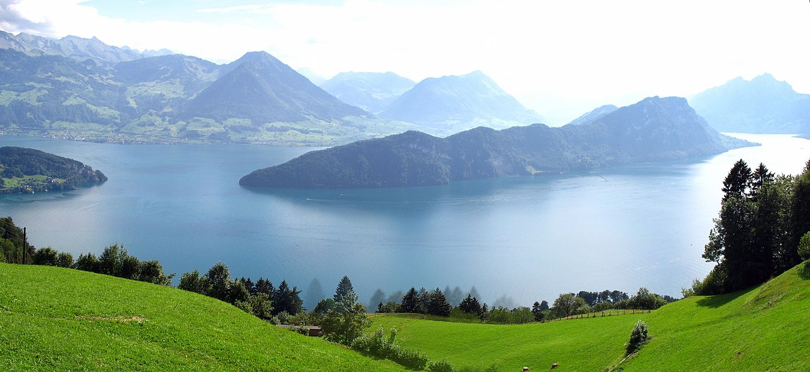
10. Tellskapelle (Wilhelm Tell kápolnája)
mérés: várakozás
távolság: —
A Tellskapelle a Tellsplatte sziklapárkányán áll, a Wilhelm Tell-legenda egyik kulcshelyszínén.
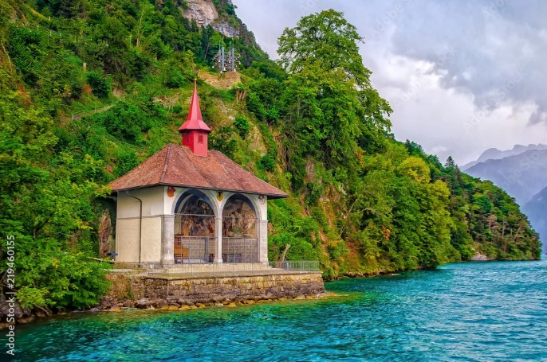
11. Glockenspiel Tellsplatte (harangjáték)
mérés: várakozás
távolság: —
A Tellsplatte felett áll Svájc legnagyobb harangjátéka, a 37 harangból álló Glockenspiel.
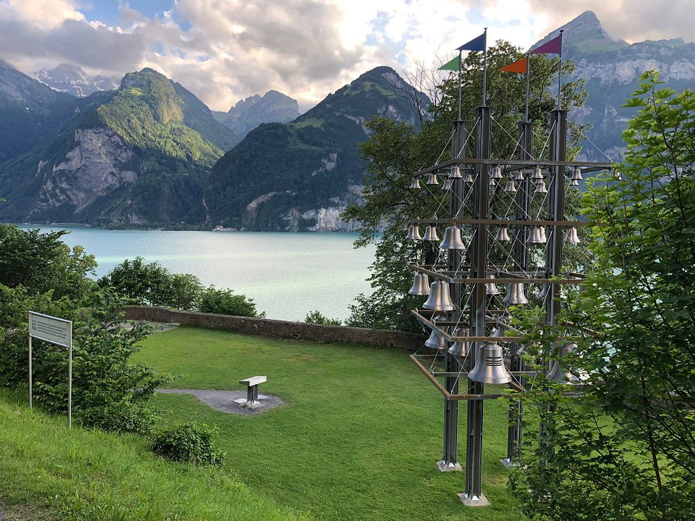
12. Schwyz (kantonszékhely)
mérés: várakozás
távolság: —
Schwyz a Svájci Konföderáció „szülőhazája”, innen ered az ország neve is.
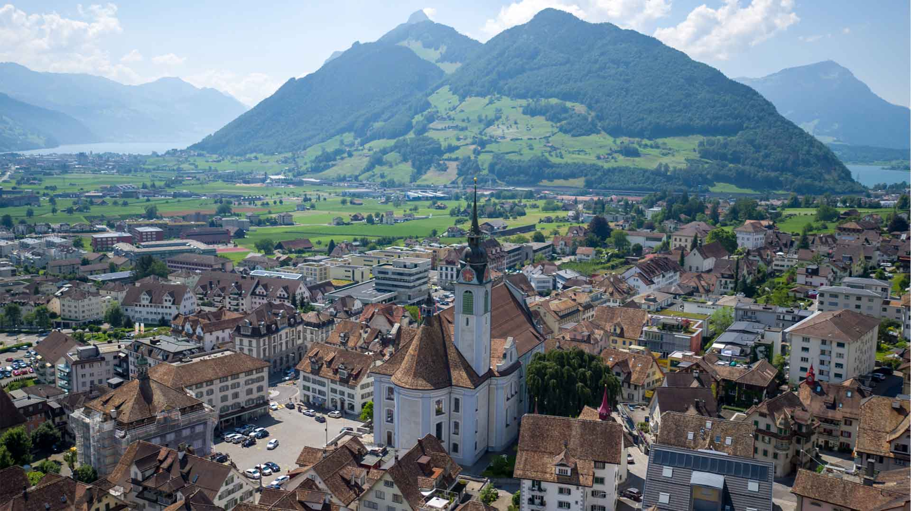
13. Camping International Lido Luzern (végállomás)
mérés: várakozás
távolság: —
Városi kemping közvetlenül a Luzerni-tó partján, nagyon jó bázis a gyalogos városnézéshez.

14. Luzern látogatás (sub program, gyalogos)
mérés: várakozás
távolság: —
Gyalogos városnéző blokk Luzernben, a tópart, az óváros és a történelmi hidak környékén.

Térkép